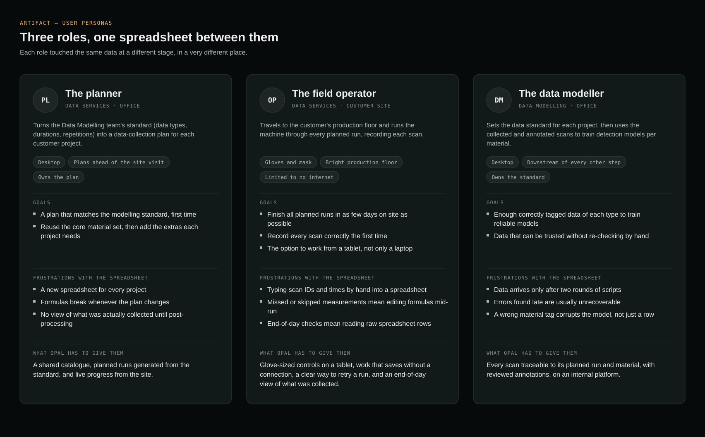
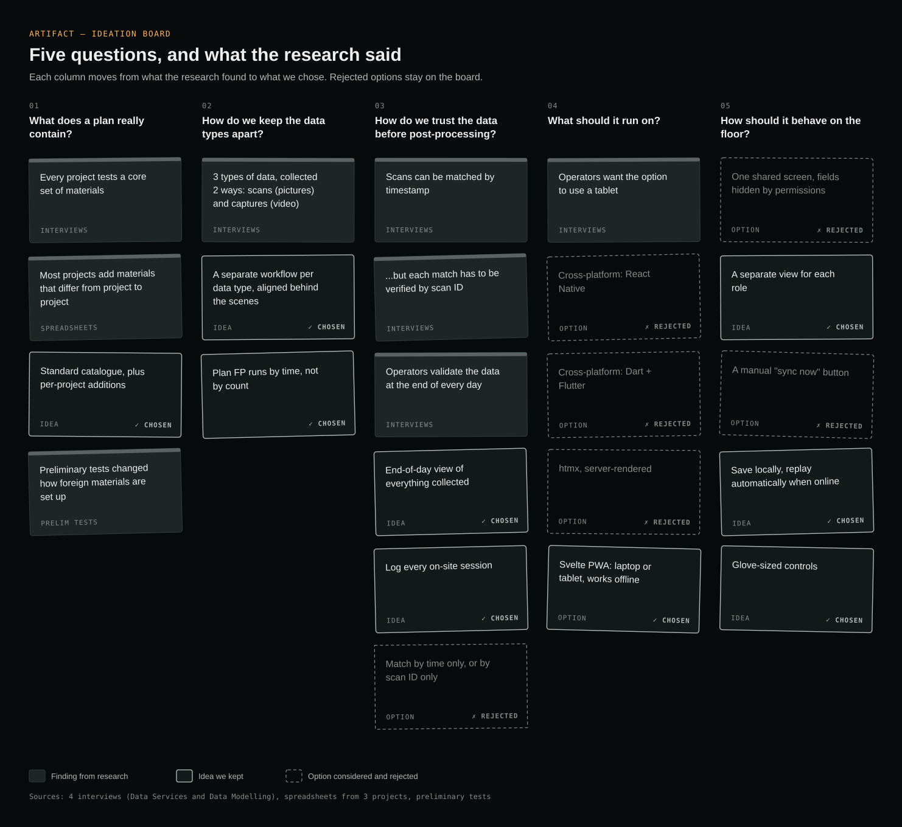
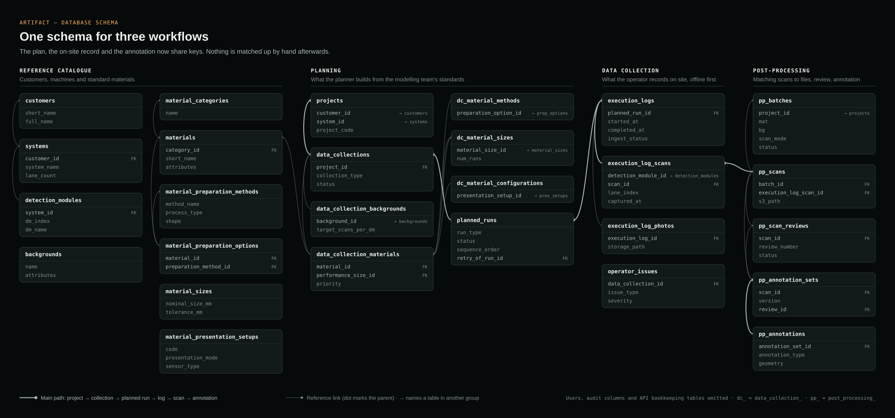
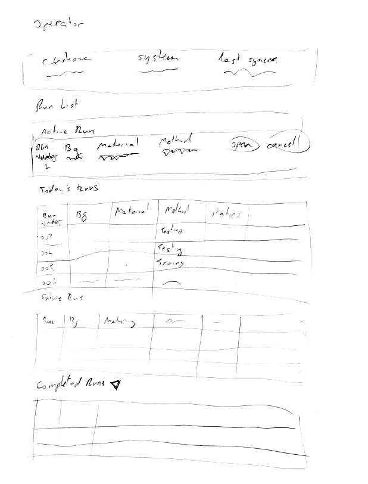
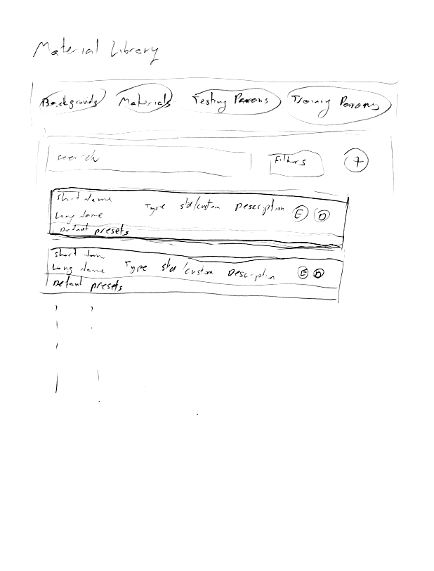
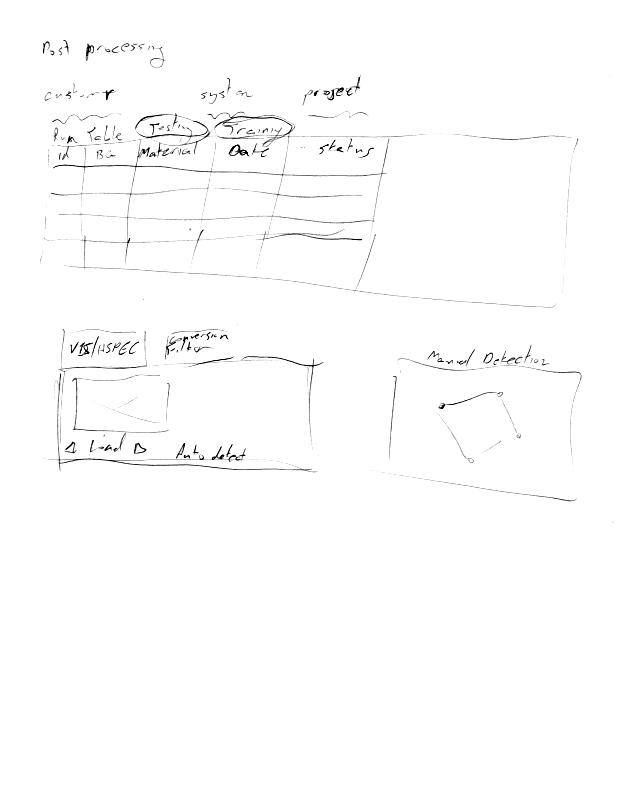
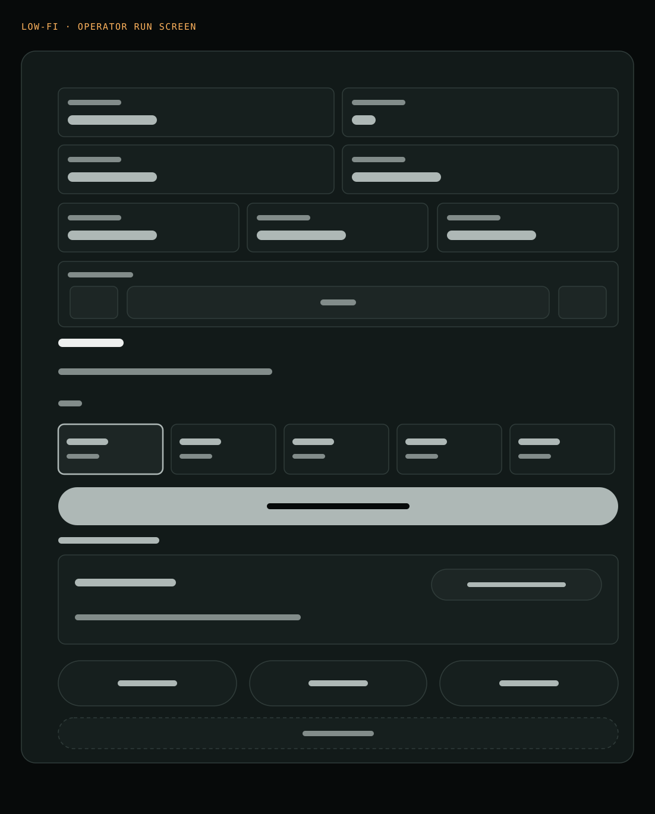
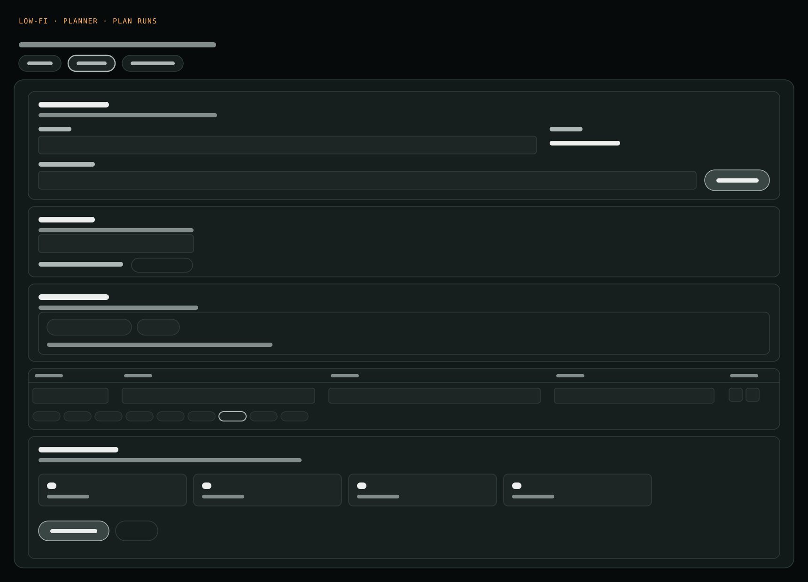
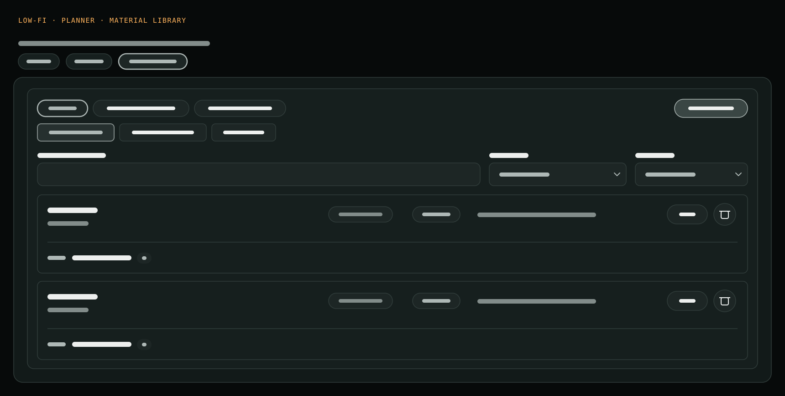
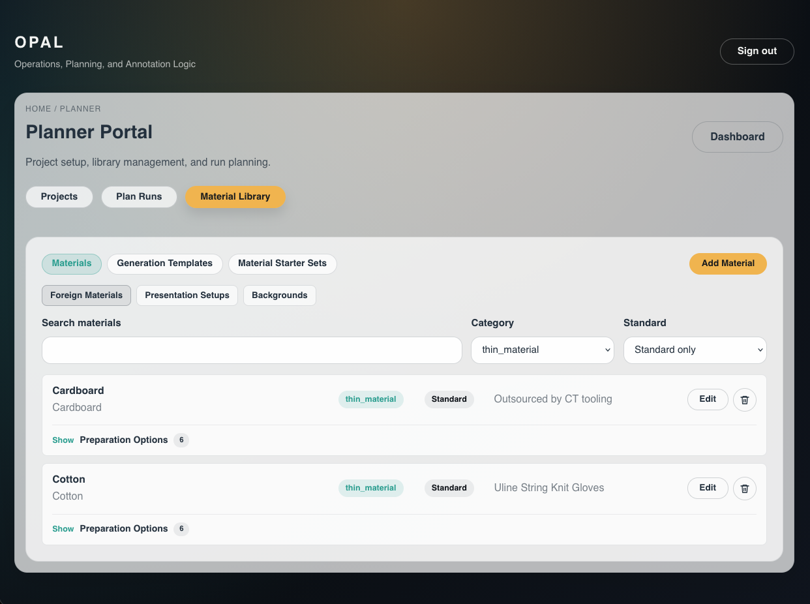

Project overview
Every customer project at P&P Optica runs through three stages: planning, data collection and post-processing. Each stage belonged to a different person and used several different tools, with one spreadsheet connecting them.
OPAL brings all three into one internal platform built around what the Data Modelling team needs. Planning, on-site collection and post-processing now share one source of data that is easy to review, with real-time logging.
- ~25%Less time at the customer site
- ~60%Less post-processing time
- Full logOf every on-site session
User research & discovery
How the old workflow ran
1 · Planning
Once sales agreed a project, Data Modelling set the standard — data types, durations and repetitions. Data Services turned it into a spreadsheet.
2 · Data collection
Data Services took the spreadsheet to the customer's production floor and recorded results by hand, in gloves and masks. A skipped measurement meant editing formulas on the spot.
3 · Post-processing
Spreadsheet and machine files went to the cloud. One set of scripts matched rows to files; a second extracted the data for Data Modelling.
How I researched it
- Spreadsheet analysis. I took apart the spreadsheets from 3 projects: data types, formulas, terms, and how the data connected.
- Documentation review. I read the Data Services team's internal docs to learn their procedures, workflows and defaults.
- Stakeholder interviews. I interviewed 4 experienced team members from the Data Services and Data Modelling teams to validate and adjust my findings, and to understand each process as it actually happens at every stage.
- Findings fed the schema. The results became the database design (see Ideation).
What I found
- Every project tests a core set of materials, but most add their own. The data structure has to be granular and flexible enough to fit each project's requirements and properties, while letting new projects add more options and parameters.
- Three types of data, collected two ways — scans (pictures) and captures (video). Keeping them separate behind the scenes makes each workflow simpler and faster.
- A scan can be matched by timestamp, but must be verified by scan ID. Time alone isn't enough to trust a match.
- Operators validate the data at the end of every day. They need to see what was collected before post-processing starts.
- Operators want the option to use a tablet. The UI can't assume a laptop.

Problem statement
Three workflows depended on one spreadsheet. It was error-prone, difficult to adjust on the go, and not user-friendly on a production floor while wearing PPE.
- User goal
- Record and adjust a run on the floor without the change itself becoming the source of errors — and always know the work is saved.
- Business goal
- Shorter site visits, faster post-processing, and data that stays inside the organisation.
Ideation
I organised the findings around five design questions, keeping the rejected options visible next to the ones we chose.
| Question | Chosen | Rejected |
|---|---|---|
| What does a plan really contain? | A standard materials catalogue with per-project additions | — |
| How do we keep the data types apart? | A separate workflow per data type; FP runs planned by time, not count | One generic run form |
| How do we trust the data before post-processing? | Match by timestamp, verify by scan ID; end-of-day review; a log of every session | Matching by time only, or by scan ID only |
| What should it run on? | A Svelte PWA — laptop or tablet, works offline | React Native, Flutter, htmx |
| How should it behave on the floor? | A view per role, automatic replay when online, glove-sized controls | One screen with fields hidden by permission; a manual "sync now" button |
Why a PWA
- No app stores. No developer accounts and no store review: an update ships instantly instead of taking up to two weeks.
- A simpler development model. One web codebase for every device.
- Offline first. htmx relies heavily on server calls, so it’s a poor fit for an app that has to cache data and keep working offline.
- It fits the product. OPAL is an internal tool with no pricing model, about two-thirds of the work is desktop-oriented, and even operators don't always choose a tablet.

Database design
The schema was reviewed by Data Modelling and by the Systems and Cloud teams before any UI work began. It separates a reference catalogue (customers, machines, materials, sizes, preparation methods) from the plan (projects → data collections → planned runs), the on-site record (execution logs, scans, photos, issues) and post-processing (batches, reviews, annotations). They share keys, so nothing is matched by hand afterwards, and a retried run points back to the run it replaces.
It changed as we learned: adjusting to better track operator issues in the field, offline work and idempotency, and new types of projects the team could take on with this tool.


Prototyping
The workflow and UI had to answer the conditions on the floor.
| Condition on the floor | What it forces | Where it shows up |
|---|---|---|
| PPE — gloves, masks | Large touch targets, few precise gestures | Operator tabs and toolbar |
| Bright light, glare | High contrast, large type | Palette and type scale |
| Limited to no internet | Work never waits on the network; save state always visible | Offline cache, queued sync |
| Plans change mid-run | Changing the plan can't be the error-prone path | Scan-ID stepper, continuity checks |
| Wrong tags corrupt models | Tagging has to be hard to get wrong | Run fields, run detail |
| Safety steps before work | A deliberate stop, not a dismissible banner | Safety modal |








Usability testing & outcomes
How it was tested
The planner and operator modules were tested several times during development by the most experienced members of the Data Services team, on our in-house system. Their feedback came back as shared documents: lists of rejects and suggestions, each marked by importance, which set the priorities for the next round.
Post-processing was tested by the developers, who ran it on data sets from earlier projects to confirm it was both usable and correct.
What changed
Planner · background in one click
A background can now be applied to every run in the collection at once, instead of being set row by row.
Operator · two running timers
The capture screen shows two timers: one for all the runs on the current background, and one for the capture in progress.
Operator · start and stop per scan
Each scan now has its own start and stop. Before, a scan's stop time was taken from the start of the next scan, which blurred the time frame.
Outcomes
- ~25%Less time at the customer site
- ~60%Less post-processing time
- Data stays inside the organisation, on its own platform.
- Every on-site session is logged and documented, so recurring errors can be spotted and fixed. Error reduction is real but not yet measured — the log is what makes it measurable.
Final solution & design brief

Design brief
Goals & audience
One platform for planning, collecting and post-processing training data. Used internally by Data Services (planners and field operators) and Data Modelling.
Layout
A separate view per role, so each person sees only their own job.
Typography
The SvelteKit default: a plain sans-serif. Small uppercase labels over bold values let the operator tell a label from its value at a glance, at arm's length.
Colour
OPAL kept SvelteKit's default light theme, so the time went into the workflow instead of a visual identity for an internal tool. It suits the floor: light neutral surfaces and near-black text hold up in bright light, and a single amber accent marks the primary action and the current selection, so the next step is always the most visible thing on screen. Dark mode was on the to-do list but wasn't required, and wasn't built before I left.
Accessibility
Large, full-width buttons and lane targets for gloved hands; a label on every field; the online and sync state shown at the top of the operator view; and disabled actions, like Complete Run, that prevent errors instead of reporting them.
Key lesson
Validate the design with everyone it belongs to before writing code.
Development
Svelte PWA, Hono API, PostgreSQL on AWS. I built the cloud and deployment infrastructure and drove the planner and operator modules.
Key challenge: keeping data consistent offline and online
Operators work for hours with no connection, and the plan can change mid-run. Every action on the tablet — safety check, scan record, plan edit, run completion — is written to a queue on the device first, so nothing waits on the network. When the connection returns, the queue replays in order. Getting that right meant solving three problems:
- No duplicates. A connection can drop after the server saved a record but before the tablet heard back. Each queued write carries a deterministic key; the API returns the existing record instead of creating a second one.
- One replayer at a time. The page and the service worker can both try to drain the queue. A lease stored on the device, plus a handshake between the two, lets only one replay.
- Tell the operator, don't retry forever. Temporary failures back off and retry. An item that can never apply is marked blocked and shown to the operator.
Before going on site, OPAL checks that the cached plan is fresh enough to work from offline.
See the offline sync sequence diagram → (opens in a new tab)
Reflection & lesson learned
Before OPAL, I built the wrong thing for weeks.
On Insights I built a data-retention feature from a vague ticket. After weeks of development, testing and deployment, I found that customer success had wanted something else from the start. On OPAL I began the other way round: spreadsheets, documentation, then interviews — before any code.
Lesson: validate the design with everyone it belongs to before writing code.
Next
More work — Insights and side projects